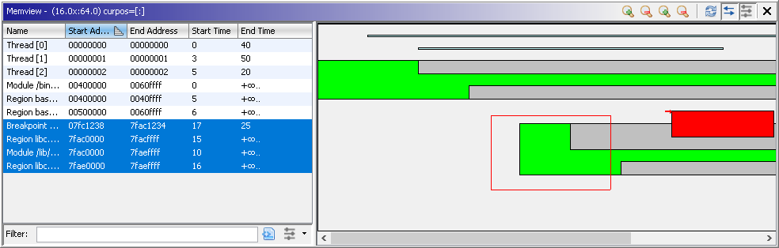

Zoom
Zoom|  |
As in the Threads view, you may wish to follow the evolution of various objects over time. The memory viewer window provides a generic time vs. address (or address vs. time) plot of objects marked as of interest. The plot may be populated from either a script, typically processing an entire trace, or updated on-the-fly from a live target trace. The objects are listed in the viewer's table on the left for the purpose of quick identification and sorting, and displayed in a scrolled plotting panel on the right.
The panel does NOT preserve distances. Rather, the objects are plotted based on the order of their lower/upper time/memory bounds. In other words, if two objects are plotted with address ranges [0x100-0x102] and [0x10000000-0x20000000], positions 1-4 on the address axis will correspond to the addresses 0x100, 0x102, 0x10000000, and 0x20000000. Mousing over the object should display it's true bounds, but, in some cases, you will need to locate on the top left corner to get an accurate tool tip. Points past the maximum time or address will not display values for that coordinate.
The table on the right provides the standard Ghidra table-style interface listing each object, its starting and ending times and starting and ending addresses, if available. Clicking on start/end addresses will navigate in the listing. All columns are sortable, and the tables filterable, as usual. A single selected row will cause a red arrow to be drawn at the top left corner of the corresponding object in the panel. Applying the filter will redisplay only the selected objects in the panel, if that option is enabled.
The panel displays all of the object in the table or the table's selection, depending on the options enabled. Clicking on the panel will set the red arrow at that position and display the current position in the title. Doubling-clicking on object will cause it to be centered in the display. The size of the panel can be expanded or contracted on either axis with the Zoom buttons. The top left corner of the panel (which may or may not be visible depending on scrolling) always corresponds to the first address and the first snap. Scroll bars are enabled if any object lies outside the viewable portion of the panel. Drag&drop can also be used to position the panel view. Ctrl-drag&drop draws a box around a region of the display, and the enclosed objects are selected in the table.
ZoomThe four zoom buttons either contract or expand the view along the time or address axes.
The default panel view is time vs. address. The toggle button serves as both the way to switch views and to refresh the display.
 Toggle Process
Trace
Toggle Process
TraceBy default, as new objects are added to a debugger trace, they appear in the table and panel. The behavior can be toggled on or off at the user's discretion.
This button determines whether the table filter affects the plot panel. When toggled on, only objects listed in the table are displayed in the plot.